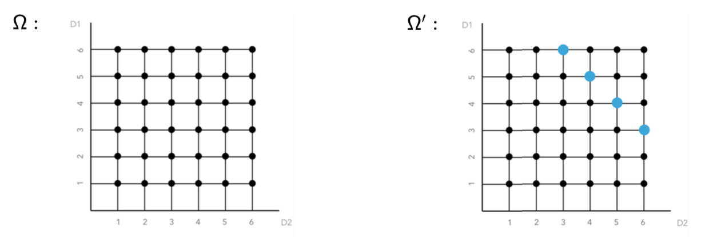

Até agora, para cada experimento aleatório em análise, associamos um espaço amostral \(\Omega\) e calculamos todas as probabilidades de interesse com base nesse conjunto de possíveis resultados. No entanto, em muitas situações, temos a possibilidade de atualizar esse espaço amostral, levando em conta novas informações ou evidências obtidas. Esse novo conhecimento leva à necessidade de recalcular as probabilidades de interesse, resultando no conceito de probabilidades condicionais.
Em outras palavras, quando sabemos que certo evento ocorreu, passamos a considerar apenas o subconjunto dos resultados compatíveis com essa nova evidência. Assim, dizemos que houve uma intervenção no espaço amostral, pois ele foi efetivamente modificado pela informação adicional obtida. Como consequência, as probabilidades são revistas para refletir essa condição prévia.
No exemplo a seguir, a parte destacada em negrito mostra o evento que constitui a informação adicional sobre o experimento, chamado evento condicionante. O evento condicionante restringe o espaço de possibilidades, modificando os valores das probabilidades associadas para os demais eventos do experimento aleatório.
Exemplo 1 (Lançamento de Dois Dados)
Considere o experimento aleatório que consiste em lançar um dado duas vezes e observar os dois resultados obtidos.
Sem informação adicional alguma, sabemos que a probabilidade de que o primeiro resultado tenha sido ‘6’ vale 1/6, desde que o dado seja honesto. Podemos visualizar o espaço amostral \(\Omega\) associado a este experimento no diagrama da esquerda, abaixo, onde o eixo vertical (D1) representa os resultados possíveis para o primeiro dado e o eixo horizontal (D2) representa os resultados possíveis para o segundo dado. Veja que, de um total de 36 combinações possíveis, em seis delas o valor obtido no primeiro dado é ‘6’.

Agora, considere que a seguinte informação adicional foi obtida: a soma dos dois resultados vale ‘9’. Como o conhecimento deste fato altera a probabilidade de que o resultado do primeiro dado tenha sido ‘6’?
Note que a nova informação restringe o espaço amostral, pois agora apenas as combinações que totalizam ‘9’ continuam sendo possíveis. No novo espaço amostral \(\Omega^\prime\), do diagrama da direita, essas possibilidades estão representadas em azul. Nesse espaço modificado, em apenas uma dessas combinações o primeiro lançamento resulta em ‘6’. Assim, à luz da ova informação, a probabilidade de o prineiro resultado ter sido ‘6’ atualiza-se para 1/4. A probabilidade de que D1 = 6 é calculada com relação às ocorrências em que D1 + D2 = 9. É precisamente esse recondicionamento (restringir aos resultados cuja soma vale ‘9’) que exemplifica o conceito de probabilidade condicional.
O código em R, abaixo, ilustra o uso de simulação para estimar de forma empírica a probabilidade de que o primeiro resultado seja ‘6’, condicionado ao fato de que a soma dos resultados dos dois dados seja ‘9’.
set.seed(123)n <-100000# tamanho da simulaçãolancamentos_1 <-sample(1:6, n, replace =TRUE)lancamentos_2 <-sample(1:6, n, replace =TRUE)# Filtra os casos em que a soma é igual a 9filtro_soma_9 <- (lancamentos_1 + lancamentos_2) ==9# Calcula a proporção de vezes em que o primeiro dado é 6, # sob condição desejadaprob_condicional <-mean(lancamentos_1[filtro_soma_9] ==6)# Mostra o resultadocat("----\n","Probabilidade de o primeiro lançamento ser 6 dado que a soma é 9:\n", prob_condicional, "\n----")
----
Probabilidade de o primeiro lançamento ser 6 dado que a soma é 9:
0.2499775
----
Vejamos como o conceito de probabilidade condicional pode ser aplicado a contextos práticos. Considere o caso de um radar que pode ou não detectar um avião que sobrevoa certa região. Nesse experimento aleatório, estamos interessados na probabilidade de haver um avião, dado que ocorreu detecção. Ainda que um avião possa passar e não ser detectado, também existe o risco de o radar acusar a presença de algo que não seja, de fato, um avião. Assim, a informação adicional de que houve detecção ‘filtra’ o espaço amostral para incluir apenas as situações em que o radar emitiu um sinal; consequentemente, a probabilidade de que esse objeto seja realmente um avião muda em relação à probabilidade inicial, sem detecção. Eis uma atualização típica por probabilidade condicional, pois ignoramos a possibilidade de um avião não detectado e passamos a trabalhar apenas com o conjunto de resultados compatíveis com a ocorrência de um sinal.
Um raciocínio muito semelhante aplica-se a um teste diagnóstico: um paciente suspeita que esteja doente e se submete a um teste laboratorial. Antes de realizar o exame, há uma probabilidade pré-teste de que esteja doente, baseada em fatores epidemiológicos. O resultado do teste é negativo. A partir de então, perguntamos: qual a probabilidade de que ele esteja doente, mesmo com o teste negativo? Se o teste não for perfeito — isto é, se puder apresentar tanto falsos positivos como falsos negativos — a probabilidade de doença precisa ser recalculada, considerando sensibilidade (capacidade de identificar corretamente a presença da doença) e especificidade (capacidade de identificar corretamente que o paciente não possui a doença) do método empregado, além da incidência (ou prevalência) da condição investigada. Novamente, o resultado negativo ‘intervém’ no espaço amostral, excluindo as possibilidades correspondentes a testes positivos e alterando a probabilidade de que o paciente efetivamente possua a doença.
Os exemplos anteriores mostram situações em que novas informações sobre o experimento aleatório (como “a soma dos dados foi 9”, “o radar acusou detecção” ou “o teste deu negativo”) modificaram significativamente o conjunto de possibilidades iniciais. Veremos a seguir a fundamentação formal de probabilidade condicional. A ideia-chave é que, ao sabermos que determinado evento ocorreu, nosso “universo” de resultados possíveis se contrai para o subconjunto compatível com essa evidência adicional. É essa noção de “restringir o espaço amostral” que nos leva a redefinir a probabilidade de interesse, levando em conta apenas os casos remanescentes depois da informação recebida.
Probabilidade Condicional
Sejam \(A\) e \(B\) dois eventos associados a um experimento aleatório \(E\), definidos em um espaço amostral \(\Omega\).
A probabilidade condicional do evento A ao evento B corresponde à razão entre a probabilidade da ocorrência simultânea dos eventos \(A\) e \(B\) e a probabilidade de ocorrência do evento \(B\). Formalmente, definimos:
O evento \(B\) é chamado evento condicionante, enquanto \(A\) é chamado evento condicionado. Intuitivamente, isso significa que, uma vez que se sabe que \(B\) ocorreu, somente as possibilidades compatíveis com \(B\) podem se concretizar. Logo, a probabilidade de \(A\), dada essa evidência prévia, corresponde à fração de casos em que \(A\) e \(B\) ocorrem simultaneamente, em relação ao conjunto de casos em que \(B\) ocorre. A expressão \(P[A|B]\) lê-se probabilidade condicional de \(A\), dado \(B\).
Obviamente, a probabilidade de \(B\) deve ser maior que zero, pois não podemos condicionar a ocorrência de um evento à ocorrência de algo que é impossível de acontecer, ou seja, que tem probabilidade zero. Temos certeza da ocorrência do evento \(B\), considerando que a informação adicional seja verdadeira. O evento \(B\) passa a ser um “novo espaço amostral”, de forma que a probabilidade de observar \(B\) dado que \(B\) ocorreu vale 1. A probabilidade condicional é a proporção desse novo espaço amostral \(B\) “ocupada” pelo evento \(A\) (isso só acontece com a interseção entre \(A\) e \(B\)). Então, a probabilidade de \(A\) dado \(B\) representa o quanto da chance de ocorrência de \(B\) pode ser representada como a chance de ocorrência de \(A\) e \(B\), simultaneamente. Uma informação adicional sempre restringe o número de possibilidades do espaço amostral original. Por esse motivo, o evento condicionante também é chamado de espaço amostral reduzido.
A consequência natural dessa definição é a chamada regra do produto, obtida ao multiplicarmos ambos os lados da equação por \(P[B]\):
Essa regra expressa a probabilidade de \(A\) e \(B\) ocorrerem simultaneamente em função de probabilidades condicionais, tanto de \(A\) dado \(B\) quanto de \(B\) dado \(A\). Esta é uma ferramenta muito útil para diversos cálculos de probabilidade, pois nos permite reorganizar os termos dependendo de qual evento for considerado condicionante.
Propriedades
Probabilidade condicional é função probabilidade; isto significa que é uma medida de incerteza válida e, portanto, satisfaz os três axiomas de Kolmogorov.
Isso significa, em primeiro lugar, que \(P[A|B]\) é um número não negativo; em segundo lugar, que a probabilidade do espaço amostral inteiro, quando condicionada a B, vale 1; e, por fim, que a soma de probabilidades de eventos mutuamente exclusivos (condicionados a \(B\)) corresponde à soma das probabilidades condicionais de cada um desses eventos. Simbolicamente, temos:
É importante perceber também que não há um vínculo fixo entre as probabilidades condicionais e as probabilidades a priori. Assim, \(P[A|B]\) pode ser maior, menor ou igual a \(P[A]\), dependendo da informação trazida pelo conhecimento de \(B\). O conceito de probabilidade condicional leva à noção de independência de eventos, conforme veremos a seguir.
Independência de Eventos
Outro conceito fundamental associado à probabilidade condicional é o de independência. Dois eventos \(A\) e \(B\) são ditos independentes quando a informação de que um deles ocorreu não altera a probabilidade do outro ocorrer. Em termos formais, isso significa que a probabilidade de \(A\), condicionada à ocorrência de \(B\), é igual à probabilidade ‘a priori’ de \(A\) (e vice-versa, trocando o papel dos eventos). Como consequência imediata, a probabilidade de \(A\) e \(B\) ocorrerem simultaneamente se expressa pelo produto de suas probabilidades marginais, \(P[A]\) e \(P[B]\). Assim, dois eventos \(A\) e \(B\) são independentes se, e somente se:
Em outras palavras, quando a ocorrência de \(B\) não exerce nenhuma influência na chance de \(A\) acontecer (e vice-versa), temos independência de eventos. É importante salientar, contudo, que a independência deve ser pressuposta ou verificada empiricamente a partir de informações sólidas; não se trata de uma propriedade derivada de maneira automática, mas sim de uma hipótese que precisa ser cuidadosamente avaliada no contexto de cada problema.
Temos, a seguir, algumas propriedades associadas a eventos independentes:
Propriedades
Sejam \(A\) e \(B\) eventos quaisquer em \(\Omega\).
Em primeiro lugar, sem maiores considerações, notamos que qualquer conjunto \(A\) é independente de \(\varnothing\) e também de \(\Omega\):
\(\forall A \subset \Omega\):
\(A\) e \(\varnothing\) são independentes
\(A\) e \(\Omega\) são independentes
Se \(A\) e \(B\) são independentes:
\({A^c}\) e \({B^c}\)
\({A}\) e \({B^c}\)
\({A^c}\) e \({B}\) … também são independentes.
O fato de um par de eventos ser independente “espalha” a independência por suas complementares, preservando a condição de que o conhecimento de um evento não altera a probabilidade do outro ocorrer.
As condições de independência tornam-se mais complexas quando consideramos uma coleção \(A_1, A_2, \ldots A_n\) de eventos.
Independência aos Pares.
Para que esses eventos sejam independentes aos pares, basta que cada par de eventos \((A_i, A_j)\) satisfaça:
\[{P[A_iA_j] = P[A_i]P[A_j], \quad \forall i \neq j}\]
No entanto, independência aos pares não garante que o conjunto completo de eventos seja mutuamente independente. Para que haja independência global, deve-se verificar que a probabilidade de interseção de qualquer subconjunto dos eventos (com tamanho variando de 2 até \(n\)) seja igual ao produto das probabilidades marginais de seus integrantes.
Independência Global. \({A_1, A_2, \ldots A_n}\) são globalmente independentes se, e somente se, \(P[A_iA_j] = P[A_i]P[A_j], \quad i \neq j\) \(P[A_iA_jA_k] = P[A_i]P[A_j]P[A_k], \quad i \neq j, i \neq k, j \neq k\) \(\vdots\) \(P[\cap_{i=1}^{n}A_i] = \prod_{i=1}^{n} P[A_i]\).
Assim, para garantir que essa coleção seja globalmente independente, precisamos garantir independência dois-a-dois, três-a-três e assim, sucessivamente, até n-a-n. Trata-se de um grande número de condições, dado que \(\sum_{k=2}^{n} = 2^n - n - 1\). Embora trabalhoso, esse cuidado é necessário para assegurar que nenhum subconjunto de eventos quebre a regra de independência.
Independência Condicional
Dois eventos \(A\) e \(B\) são condicionalmente independentes em relação a um terceiro evento \(C\) se, sabendo que \(C\) ocorreu, a probabilidade de \(A\) e \(B\) ocorrerem simultaneamente é igual ao produto das probabilidades condicionais de \(A\) e \(B\) dado \(C\), ou seja:
\[{P[AB|C] = P[A|C]P[B|C]}\] Isso indica que, no “universo” reduzido por \(C\), a ocorrência de \(A\) não influi na de \(B\), e vice-versa, ainda que \(A\) e \(B\) possam não ser independentes no espaço amostral original.
Eventos Independentes x Eventos Mutuamente Exclusivos
Por fim, vale reforçar a distinção entre eventos independentes e eventos mutuamente exclusivos (ou disjuntos). Nos eventos independentes, saber que \(B\) ocorreu não modifica a probabilidade de \(A\), enquanto, nos eventos mutuamente exclusivos, a ocorrência de um impede necessariamente a ocorrência do outro. No extremo, um par de eventos mutuamente exclusivos evidencia uma dependência completa: se \(A\) acontece, \(B\) não pode ocorrer, e vice-versa. Essa diferença conceitual é crucial, pois muitas vezes os termos são confundidos, mas representam situações opostas em termos de interferência nas probabilidades.
Aplicação: Confiabilidade de Sistemas
Uma aplicação interessante de independência de eventos é a análise de confiabilidade de sistemas, isto é, a probabilidade de que o sistema continue a operar sem falhas. Comumente, a confiabilidade de um sistema é determinada com base na probabilidade de falha de seus componentes (ou subsistemas) e na forma como estão arranjados. Na prática, essa informação pode orientar a escolha, dentre diferentes alternativas de projeto, de soluções que atendam aos requisitos de projeto de maneira mais segura ou econômica.
Em análise de confiabilidade, é comum fazer a suposição de independência entre falhas de componentes, a fim de simplificar os cálculos, ainda que em situações reais, nem sempre seja válida.
Arranjos em Série e em Paralelo
Para fins de ilustração, considere um sistema formado por apenas dois componentes, \(A\) e \(B\), que podem estar dispostos dentro do sistema em série ou em paralelo.
E vamos definir os seguintes eventos de interesse:
No arranjo em série, o sistema só funciona se ambos os componentes estiverem operando simultaneamente. Se pelo menos um dos componentes falhar, o sistema falha. Portanto, a probabilidade de falha do sistema com componentes em série \(P_s\) é dada pela probabilidade da união dos eventos \(A\) e \(B\):
\[P_s = P[A \cup B] = P[A] + P[B] - P[AB]\]
No arranjo em paralelo, o sistema só falha apenas se ambos os componentes falharem simultaneamente. Nesse caso, assumindo que as falhas são independentes, a probabilidade de falha do sistema \(P_p\) é o produto das probabilidades de falha individuais:
\[P_p = P[A \cup B] = P[A] \times P[B]\] Sistemas em paralelo são comumente chamados _sistemas redundantes), pois a presença de mais de um componente reduz a chance de falha global.
Vejamos, a seguir, um exemplo simples que envolve o conceito de independência para comparar a confiabilidade dos dois tipos de aeronaves.
Exemplo 2 (Aeronaves com Duas ou Quatro Turbinas)
Considere dois tipos de aeronaves:
A2: aeronave de duas turbinas
A4: aeronave de quatro turbinas
Ambas as aeronaves voam em segurança se pelo menos a metade de seus motores estiver operando corretamente. Caso contrário, será necessário realizar um pouso forçado. Assuma que cada turbina falha ou funciona de modo independente e que cada turbina tem probabilidade \(p\) de funcionar corretamente em um voo. Nosso objetivo é comparar a confiabilidade das duas aeronaves, isto é, determinar qual das duas tem menor probabilidade de pouso forçado, em função do valor do parâmetro \(p\).
Vamos iniciar pela solução analítica desse problema.
Solução analítica
Sejam os eventos:
\(T2\) = A2 faz pouso forçado \(T4\) = A4 faz pouso forçado
Precisamos calcular \(P[T2]\) e \(P[T4]\), a probabilidade de pouso forçado em cada caso.
Aeronave A2: o pouso forçado acontece quando uma ou as duas turbinas falham. Em termos de eventos complementares, o sistema “funciona” quando há uma ou duas turbinas em operação. Assim, a probabilidade de pouso forçado para A2 vale:
Aeronave A4: o pouso forçado ocorre quando três ou quatro turbinas falham, já que neste caso haveria menos do que duas turbinas em operação. Assim, a probabilidade de pouso forçado para A4 vale:
Comparando \(P[T2]\) e \(P[T4]\), verifica-se que o avião de 4 turbinas é mais seguro (tem menor probabilidade de sofrer pouso forçado) que o avião de 2 turbinas sempre que \(p > 2/3\). Para valores de \(p\) abaixo de \(2/3\), o modelo de duas turbinas tende a apresentar maior confiabilidade. Note que este resultado se baseia na suposiçnao de que as turbinas falhem independentemente umas das outras.
Representação Gráfica
A seguir, temos uma representação gráfica da solução analítica (e o código em R utilizado para obtê-la), com as probabilidades teóricas de pouso forçado para cada aeronave, como função de \(p\). Note a reta tracejada indicando o ponto \(p = 2/3\), onde \(P[T2]\) e \(P[T4]\) se igualam.
# Carrega bibliotecaslibrary(tidyverse)theme_set(theme_minimal()) # fundo branco para os gráficos# Funções para probabilidades teóricasp4_falha <-function(p) 1-3*p^4+8*p^3-6*p^2p2_falha <-function(p) 1+ p^2-2*p# Vetor de valores possíveis de px <-seq(0, 1, by =0.01)# Monta tabela com valores calculadosturbinas <-tibble(p = x,T2 =p2_falha(x),T4 =p4_falha(x))# Gráficoggplot(turbinas, aes(x = p)) +geom_line(aes(y = T2, color ="2 turbinas"), size =1.2) +geom_line(aes(y = T4, color ="4 turbinas"), size =1.2) +geom_vline(xintercept =2/3, linetype ="dashed") +labs(x ="Probabilidade de cada turbina funcionar (p)",y ="Probabilidade de pouso forçado",color ="Modelo de Avião" ) +scale_color_manual(values =c("2 turbinas"="blue", "4 turbinas"="red"))
Solução Computacional via Simulação de Monte Carlo
Para verificar empiricamente essas expressões teóricas, podemos simular a ocorrência de falhas em sucessivos voos. Primeiro, vamos definir a função simula_voos para simular voos para cada uma das aeronaves. Ela recebe como argumentos a probabilidade p de cada turbina funcionar e o número de voos a serem simulados n_voos.
A ideia é gerar, para cada voo, um vetor que indica se cada turbina falhou (0) ou funcionou (1). Então, verificamos se o avião faz pouso forçado conforme seu critério de segurança.
simula_voos <-function(p, n_voos) {# Para reprodutibilidade (opcional)# set.seed(123)# Gera resultados de funcionamento das turbinas:# 0: falhou# 1: funcionou# Os resultados são armazenados em matrizes:# cada linha corresponde a um voo simulado# cada coluna corresponde a uma turbina# Para o avião de 2 turbinas voos_2 <-matrix(sample(c(0,1), 2*n_voos, replace =TRUE, prob =c(1-p, p)),nrow = n_voos, ncol =2 )# Para o avião de 4 turbinas voos_4 <-matrix(sample(c(0,1), 4*n_voos, replace =TRUE, prob =c(1-p, p)),nrow = n_voos, ncol =4 )# Define pouso forçado para cada voo# A2 falha se rowSums < 1# A4 falha se rowSums < 2 fail_2 <-rowSums(voos_2) <1 fail_4 <-rowSums(voos_4) <2# Frequência relativa cumulativa de pousos forçados frel_2 <-cumsum(fail_2) /seq_len(n_voos) frel_4 <-cumsum(fail_4) /seq_len(n_voos)# Retorna frequencias relativas de pousos forçados como listalist(frel_2 = frel_2,frel_4 = frel_4 )}
Simulação de várias replicações
Podemos utilizar a função simula_voos para simular voos e estimar a probabilidade de pousos forçados para cada um dos tipos de aeronaves. Ao utilizar essa função apenas uma vez, temos apenas uma estimativa das probabilidades desejadas, com base em um caminho aleatório de tamanho n_voos. A fim de construir uma distribuição aproximada de frequências relativas que estimam a probabilidade de pouso forçado, precisamos repetir esse procedimento um número nRep grande de vezes, para cada valor de probabilidade p de funcionamento das turbinas. Implementamos isso na função simula_MC:
simula_MC <-function(p, nRep, n_voos) {# Matrizes para armazenar as frequências relativas finais# de cada replicação frel_2_store <-matrix(0, nrow = nRep, ncol = n_voos) frel_4_store <-matrix(0, nrow = nRep, ncol = n_voos)for(i inseq_len(nRep)) { sim <-simula_voos(p, n_voos) frel_2_store[i, ] <- sim$frel_2 frel_4_store[i, ] <- sim$frel_4 }# Retorna frequencias relativas de pousos forçados como listalist(frel_2 = frel_2_store,frel_4 = frel_4_store )}
Exemplo com p = 0.5:
Podemos agora executar a simulação para um valor específico de p. Por exemplo, definindo:
# ParâmetrosnRep <-100# número de replicaçõesn_voos <-2000# número de voos por replicaçãop <-0.5# probabilidade de cada turbina funcionar# Execução da simulaçãosim_data <-simula_MC(p, nRep, n_voos)# Frequências relativas de pousos forçadosfrel_2 <- sim_data$frel_2 # avião de 2 turbinasfrel_4 <- sim_data$frel_4 # avião de 4 turbinas
Nessa simulação, frel_2[i, ] e frel_4[i, ] mostram, para a i-ésima replicação, como a frequência relativa de pousos forçados evolui ao longo dos voos simulados. Para analisar o resultado, podemos plotar (1) os “caminhos aleatórios” (sample paths) de cada replicação, comparando-as aos valores teóricos, e (2) histogramas das frequências relativas finais (no último voo) de cada replicação. Eis um exemplo de como gerar esses gráficos:
# Gráfico 1: caminhos aleatóriosplot(NULL, type ="n",xlim =c(1, n_voos), ylim =c(0,1),xlab ="Número de voos simulados",ylab ="Frequência relativa de pousos forçados",main =paste("Caminhos Aleatórios para p =", p))# Desenha as linhas para o avião de 2 turbinas (azul)for(i inseq_len(nRep)) {lines(1:n_voos, frel_2[i, ], col ="blue", lwd =0.5)}# Desenha as linhas para o avião de 4 turbinas (vermelho)for(i inseq_len(nRep)) {lines(1:n_voos, frel_4[i, ], col ="red", lwd =0.5)}# Probabilidades teóricas (linhas horizontais)p2_teo <-1+ p^2-2*pp4_teo <-1-3*p^4+8*p^3-6*p^2abline(h = p2_teo, col ="blue", lty ="dashed", lwd =2)abline(h = p4_teo, col ="red", lty ="dashed", lwd =2)legend("topright",legend =c("2 turbinas", "4 turbinas", "Teórico 2T", "Teórico 4T"),col =c("blue", "red", "blue", "red"),lty =c("solid","solid","dashed","dashed"),bty ="n")
O gráfico acima mostra os 100 caminhos aleatórios que foram percorridos para os 2000 voos simulados. Em azul temos a evolução dos valores calculados para as frequências relativas de pousos forçados para o avião de 2 turbinas e em vermelho, para o avião de 4 turbinas. Como era de se esperar, a frequência de pousos forcados é maior para o avião de 4 turbinas. As retas horizontais tracejadas correspondem aos valores teóricos.
Outra forma interessante de avaliar a convergência dos valores estimados é através da análise da distribuição dos valores finais das frequências relativas de pousos forçados (após o último voo, n_voos), como mostra o gráfico abaixo:
# Gráfico 2: histogramas das frequências relativas finaishist(frel_2[, n_voos],xlim =c(0,1), col =rgb(0,0,1,0.5),main =paste("Distribuição de freqs. relativas finais (p =", p, ")"),xlab ="Frequência relativa de pousos forçados",border ="white")hist(frel_4[, n_voos],xlim =c(0,1), col =rgb(1,0,0,0.5),add =TRUE, border ="white")abline(v = p2_teo, col ="blue", lwd =2, lty ="dashed")abline(v = p4_teo, col ="red", lwd =2, lty ="dashed")legend("topright",legend =c("2 turbinas", "4 turbinas","Teórico 2T", "Teórico 4T"),col =c("blue", "red","blue","red"),pch =15, lty =c(NA,NA,2,2),bty ="n")
As linhas tracejadas em azul e vermelho representam as probabilidades teóricas. Se as turbinas são mesmo independentes e o número de replicações é suficientemente grande, os valores empíricos tenderão a se aproximar das previsões analíticas.
O mesmo procedimento pode ser repetido para outros valores de \(p\). Em particular, verificar \(p = 2/3\), \(p = 0.8\) ou \(p = 0.9\) confirma que a aeronave de 4 turbinas gradualmente se torna mais confiável à medida que \(p\) ultrapassa \(2/3\), em acordo com a análise teórica.
Quando consideramos eventos simples como o do exemplo, em que consideramos apenas dois modelos de aeronaves, com poucas turbinas, é relativamente fácil comparar resultados analíticos e simulações de Monte Carlo. Assim, obtemos insights sobre quais valores de p (probabilidade de cada turbina funcionar) tornam um determinado projeto mais seguro que outro. Em contextos mais complexos, que incluem falhas correlacionadas ou numerosos componentes em rede, por exemplo, o mesmo tipo de análise pode ser adaptado, embora o modelo fique mais elaborado.
No exemplo, vimos como a informação de que um componente falhou (ou funcionou) afeta a probabilidade de falha do sistema completo. Quando componentes são realmente independentes, a probabilidade de falha simultânea é apenas o produto das probabilidades individuais. Em aplicações reais, porém, pode haver fatores de dependência (por exemplo, sobrecarga de uma turbina levando à falha de outras), o que exigiria modelos específicos para capturar essas interações.
Teoremas Fundamentais da Probabilidade
Combinando a definição de probabilidade condicional, o conceito de independência e os resultados a seguir, podemos resolver problemas de probabilidade consideravelmente complexos. Esses teoremas fundamentais da probabilidade se apoiam na construção de uma partição do espaço amostral adequada, cuja configuração simplifica o cálculo das probabilidades envolvidas.
Partição do Espaço Amostral
Uma partição de \({\Omega}\) é uma coleção de eventos \({A_1, A_2, \ldots}\) que satisfaz:
\({A_1, A_2, \ldots}\) são coletivamente exaustivos (\({\cup_{i} A_i = \Omega}\))
Em outras palavras: (i) cada um dos eventos que compõe a partição do espaço amostral deve ter probabilidade não nula; (ii) nenhum par de eventos pode ocorrer simultaneamente; e, finalmente, (iii) a união de todos eles cobre completamente o espaço amostral.
A figura abaixo ilustra exemplos de partições possíveis. A primeira consiste em uma partição do espaço amostral em apenas dois eventos (neste caso, a partição é formada por um evento e o seu complementar); no segundo exemplo, temos uma partição finita e no terceiro, temos uma partição infinita.
Figura 1: Exemplos de partições do espaço amostral.
O Teorema da Probabilidade Total (TPT) permite simplificar o cálculo de probabilidades, “quebrando” eventos complexos em pedaços mais manejáveis, aproveitando uma partição bem escolhida do espaço amostral. Essa ideia é ilustrada pela figura a seguir, onde a probabilidade associada ao evento \(B\) (em destaque) é de difícil avaliação direta, mas torna-se mais fácil ao particionar \(\Omega\) nos eventos \(A_1, A_2, \ldots, A_5\).
Figura 2: Ilustração do Teorema da Probabilidade Total.
Suponha que desejamos calcular a probabilidade de um evento \(B\), mas que seja complexo fazê-lo a partir da análise direta do espaço amostral (representado pela caixa retangular). O teorema da probabilidade total permite calcular a probabilidade desejada através da escolha de uma partição do espaço amostral, formada pela coleção de eventos \(A_1, A_2, A_3, \ldots, A_k\), cujas probabilidades podem ser facilmente determinadas.
Observe que podemos representar o evento \(B\) em termos dessa partição:
\[
\begin{align*}
B = B\cap \Omega = B \cap (\cup_i A_i)
&= \cup_i (A_iB)
\end{align*}
\]
Como os eventos \(A_i\) que formam a partição são mutuamente exclusivos, os termos \(A_iB\) também o serão. Logo, a probabilidade do evento \(B\) pode ser calculada da seguinte maneira:
Usando a regra do produto, chegamos à forma clássica do teorema da probabilidade total, enunciada a seguir.
Teorema da Probabilidade Total: dividir para conquistar
Se \(A_1, A_2, \ldots, A_k\) formam uma partição de \(\Omega\) e \(P[A_i] >0\), então:
\[P[B] = \sum_{i=1}^{k} P [B\cap A_i] = \sum_{i=1}^{k} P[B|A_i] P[A_i]\]
A ideia central do teorema da probabilidade total é que podemos escolher uma partição do espaço amostral que torne mais fácil o cálculo das das quantidades \(P[B | A_i]\) e \(P[A_i]\), a fim de simplificar a determinação da probabilidade do evento \(B\).
O teorema de Bayes é outra ferramenta fundamental, frequentemente descrita como um método de “atualizar crenças” diante de novas evidências. Ele se baseia na mesma ideia de construir uma partição do espaço amostral conveniente, combinada à definição de probabilidade condicional.
Figura 3: Ilustração do Teorema de Bayes.
Suponha que um efeito\(B\) tenha sido observado (por exemplo, um teste positivo ou a ocorrência de uma certa anomalia) e que suspeitamos de várias causas possíveis \(A_1, A_2, \ldots, A_k\) que, por sua vez, formam uma partição do espaço amostral. Cada causa \(A_i\) tem probabilidade a priori\(P[A_i]\). Queremos, então, descobrir a probabilidade de cada causa, dado que \(B\) ocorreu.
A observação do efeito \(B\) consiste em uma informação adicional. Assim, é necessário atualizar a crença a respeito das possíveis causas à luz dessa nova evidência. Isto se dá através do cálculo das probabilidades a posteriori (que nada mais são do que probabilidades condicionais) de cada uma das possíveis causas, dado que o efeito \(B\) foi observado, \(P[A_i | B]\), conforme enunciado no quadro abaixo:
Teorema de Bayes: aprendendo pela experiência
Se \(A_1, A_2, \ldots, A_k\) formam uma partição de \(\Omega\) e \(P[B] >0\), então: \[ P[A_j|B] = \frac{P[A_jB]}{P[B]} =\frac{P[B|A_j]P[A_j]}{\sum_{i=1}^{k} P[B|A_i] P[A_i]}, \qquad \forall \; j= 1, \ldots, k\]
onde:
\(P[A_i]\) é a probabilidade a priori de cada causa; \(P[B|A_i]\) é a probabilidade de observar o efeito \(B\) quando a causa \({A_i}\) está presente; \(P[A_j|B]\) é a probabilidade a posteriori de que a causa \({A_j}\) esteja presente, dado que o efeito \({B}\) foi observado.
No teorema de Bayes, a probabilidade conjunta do numerador \(P[A_jB]\) foi reescrita com o auxílio da regra do produto; no denominador, a probabilidade de \(B\) foi reescrita na forma do teorema da probabilidade total, ou seja, em termos da partição do espaço amostral dada em função das possíveis causas.
O Teorema de Bayes encapsula o processo de atualização das probabilidades: começamos com crenças iniciais, representadas pelas probabilidades a priori\(P[A_i]\), obtemos uma evidência nova (ocorrência de \(B\)) e, então, recalculamos as probabilidades à luz dessa evidência, resultando em crenças atualizadas, representadas pelas probabilidades a posteriori\(P[A_j |B]\).
Exemplo 3 (Diagnóstico em Raio-X)
Suponha que o exame de raio-X de um paciente tenha revelado uma mancha. Esta evidência é o efeito que foi observado, que corresponde ao evento \(B\).
Há diversas causas possíveis para a presença da mancha no raio-X, mas precisamos escolher aquelas que sejam de nosso interesse. Queremos determinar as chances de que essa mancha seja explicada por uma das potenciais causas apresentadas abaixo, que formam uma partição do espaço amostral (assumimos que as causas não possam ocorrer simultaneamente):
Causa A1: o paciente tem COVID-19
Causa A2: o paciente tem tuberculose
Causa A3: outra causa (qualquer motivo não listado antes)
Note que, ao considerar esta partição do espaço amostral, estamos preocupados em identificar se a mancha foi provocada por COVID-19 ou tuberculose; não estamos preocupados com as outras inúmeras possíveis explicações para a ocorrência de uma mancha num exame de raio-x. Não nos interessa se o paciente está com pneumonia, se o paciente aspirou algum corpo estranho ou se o aparelho de raio-x está com defeito. Por esse motivo, a partição foi escolhida desta maneira.
Considerando a história médica do paciente e, com base apenas no conhecimento da incidência dessas doenças na população, sabe-se que:
\[{P[A1] = 0,02; \quad P[A2] = 0,01; \quad P[A3] = 0,97},\] onde cada valor representa uma probabilidade a priori de o paciente apresentar COVID-19, tuberculose ou alguma outra condição.
Além disso, sabemos que avaliação do exame de raio-X nem sempre é perfeita e, por este motivo, nem sempre é possível chegar à conclusão correta. Tem-se as seguintes probabilidades de observar uma mancha no exame, dado que está presente cada uma das causas consideradas:
Queremos calcular: qual a probabilidade de o paciente ter COVID-19, dado qu a mancha foi observada?
Formalmente, desejamos calcular a probabilidade a posteriori da causa \(A1\), dado que observamos uma mancha no exame de raio-X (evento \(B\)). Essa é a probabilidade \(P[A1|B]\) e pode ser calculada utilizando o teorema de Bayes.
O primeiro passo consiste em representar no espaço amostral a partição considerada, composta pelos eventos \(A1\), \(A2\) e \(A3\) e também o evento \(B\). As interseções entre os eventos que formam a partição do espaço amostral e o evento \(B\) formam uma partição de \(B\). Para, assim, podermos reescrever o evento \(B\) em termos dessa partição.
Espaço amostral: \(\Omega\)
Temos que:
\(A1\), \(A2\), \(A3\) formam uma partição de \({\Omega}\)
\(A1B\), \(A2B\), \(A3B\) formam uma partição de \(B\): \(A1B \cup A2B \cup A3B = B\)
Usando a definição de probabilidade condicional, a probabilidade de que o paciente tenha COVID-19, dado que a mancha foi observada é dada pela razão da probabilidade da ocorrência simultânea de COVID-19 e de uma mancha no raio-X e a probabilidade de haver uma mancha no exame de raio-X.
\[P[A_1 | B] = \frac{P[A_1B]}{P[B]}\]
Com o auxílio da regra do produto, o numerador é reescrito em termos da probabilidade condicional de observar uma mancha no exame de raio-X, quando o paciente está acometido de COVID-19 e da probabilidade de o paciente ter COVID-19, enquanto o denominador pode ser calculado através do teorema da probabilidade total, com base na partição do espaço amostral considerada. Assim:
Note que, antes do exame de raio-X, a chance de o paciente ter COVID-19 era de 2%. Ao observar a mancha, essa chance sobe para aproximadamente 19%. O teorema de Bayes capta exatamente essa ideia de “aprender com a evidência”: a probabilidade a posteriori de cada causa (COVID, tuberculose ou outra) sofre uma atualização baseada em quão provável seria a ocorrência da mancha sob cada hipótese.
Por fim, cálculos análogos para as outras causas, mostram que \(P[A2|B] \approx 0,0996\) (cerca de 10%) e \(P[A3|B] \approx 0,7117\) (aproximadamente 71%). Caso o médico deseje ter mais certeza da causa que provocou a mancha no exame, a fim de prescrever o tratamento adequado, deve buscar novas evidências, por meio de exames adicionais. E, assim, à luz dos novos resultados, poderá recalcular via Teorema de Bayes as probabilidades de cada causa.